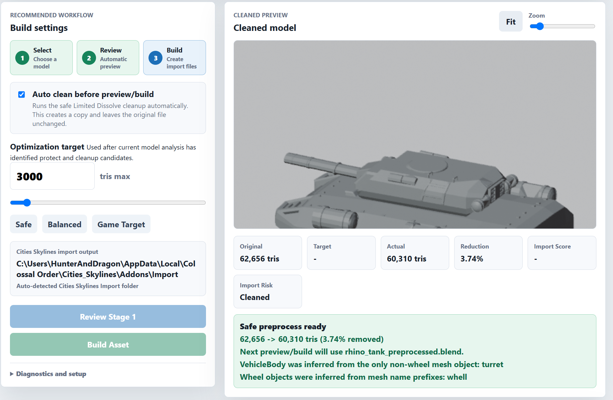
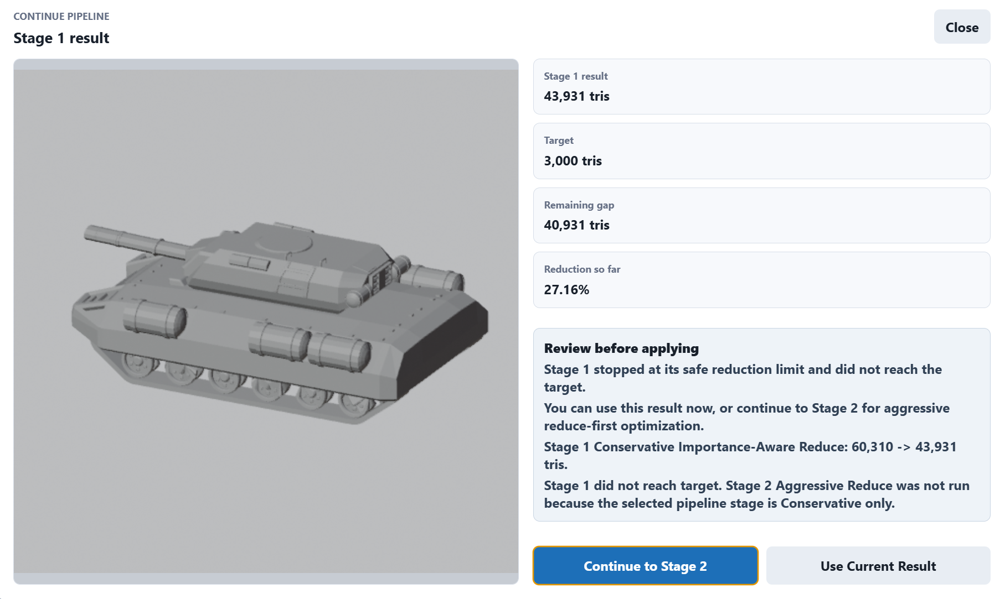
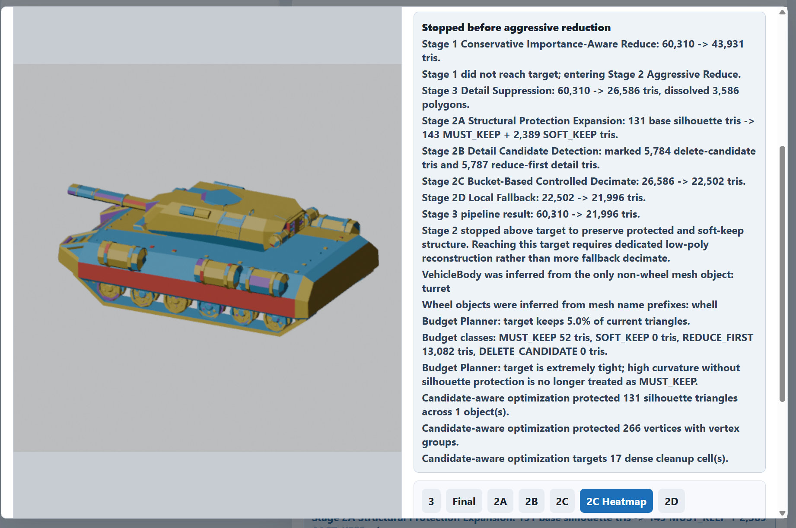
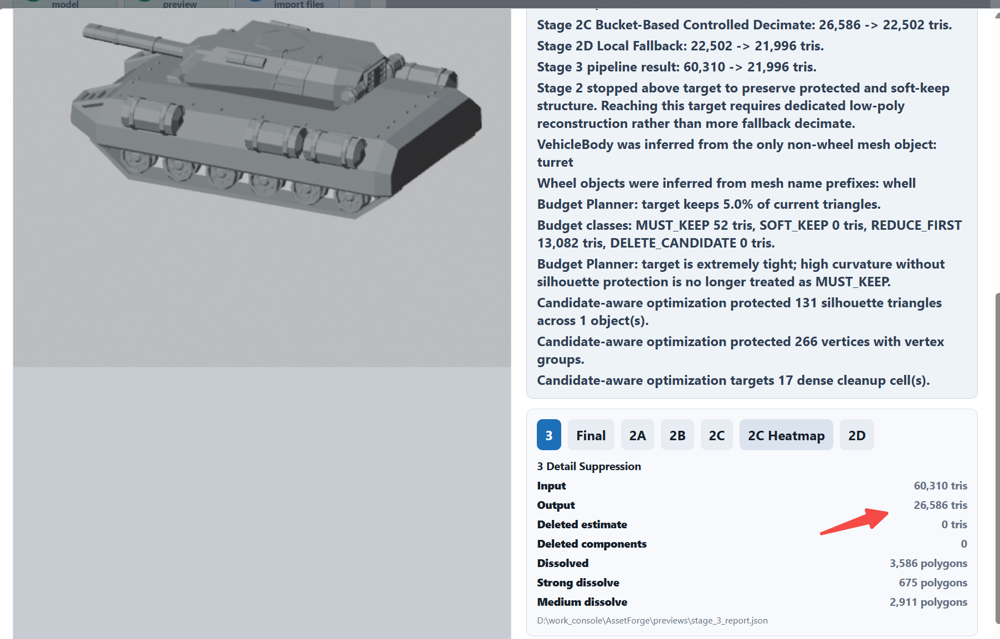
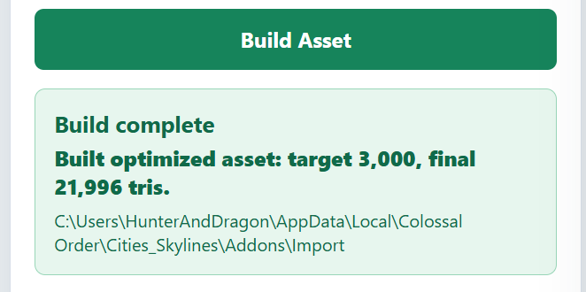
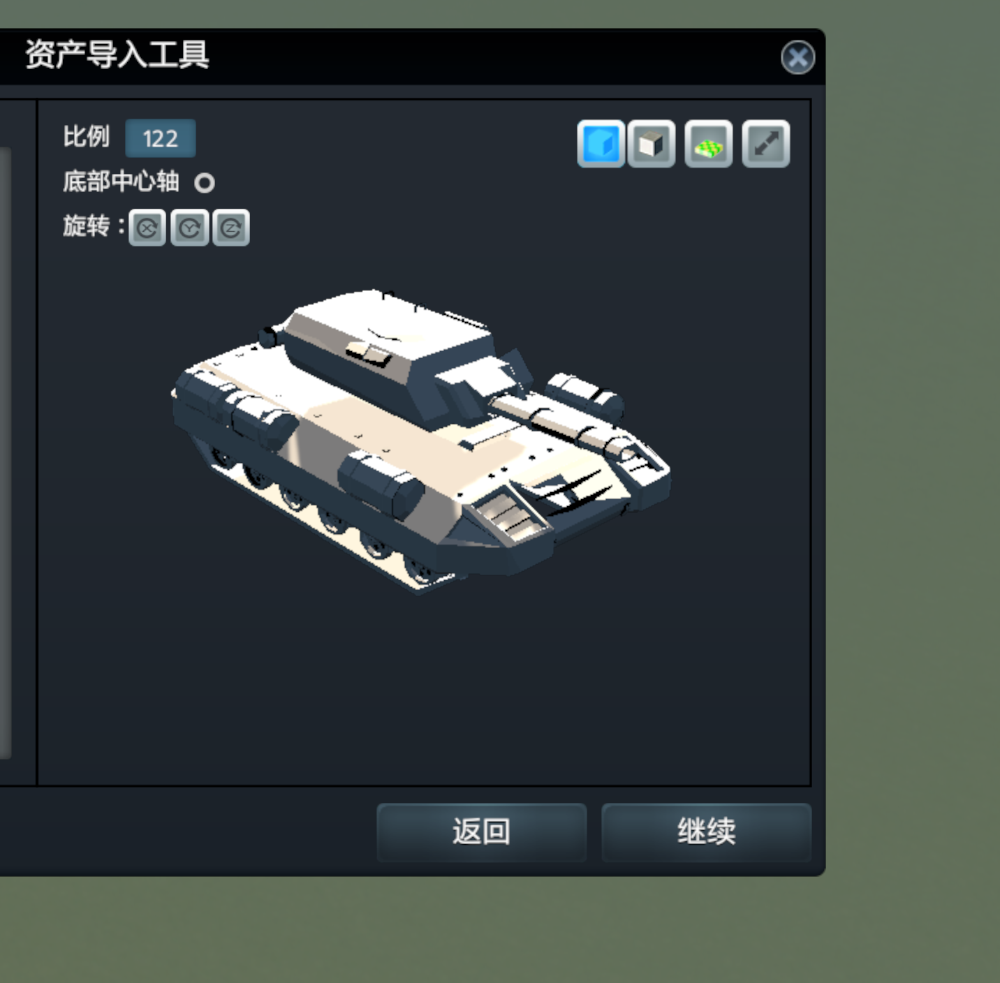

由自定义天际线资产而来的自动减面工具（V1：Rule-Based Optimizer）
Background
大概是最近没什么意思，想弄 Blender 搞个犀牛坦克和灰熊坦克的模型，导入到天际线里面看刁民们开坦克上班。
同时又琢磨要不要顺便 3D 打印一个玩，就倒角、突起、格栅啥的该做做。反正我水平也一般，很快糊出来一坨屎。
这个面数直接爆炸。导入天际线的车辆资产，面数怎么着也应该是千级的吧，可是这个时候我却发现我这坨屎直接 60000 面。
我替大伙尝试过了，这个面数直接导入不进去，60000、45000、35000 都不行，30000 以下才勉强行。但是你一辆车就 30000 个面是不是太过分了？那么多刁民一掏口袋坦克，电脑岂不是冒烟？
但是我又不想手动重新建模（虽然说让我重新做个简单盒子，估计早就做完了），于是就想能不能利用 AI 做一个自动减面的工具？而且减面完了自动烘焙贴图，然后导入到城市天际线中去。
和 AI 大概聊了一下，目前大概有三种路线：
路线 1：人工 Retopo
这是 AAA 游戏的常规做法：
1 | |
缺点：
- 无法自动化
- AssetForge 不可能走这个路线
路线 2：Simplygon 路线
核心思想：
- 识别特征
- 保留轮廓
- 删除细节
本质上还是：
1 | |
路线 3：现代研究路线
近几年开始出现一些新的方向，例如：
- Feature Aware QEM
- Mesh Simplification in the Wild
核心思想：
- 保留边界
- 保留高曲率区域
- 保留法线变化大的区域
优先压缩：
- 平面
- 重复细节
人工的方法肯定是不考虑的，我也不是拿去做商业模型，没有那么高的精度要求。当时觉得我的模型都是比较简单方正的，也许简单的路线 2 就可以 work。删一删特别小的面，合并合并，可能面数一下子就降低了。
Rule-Based Optimizer
于是说干就干，立刻让 Codex 开始操刀。
Preprocess
最初先进行一次低风险的清理：
- 对共面或近似共面的多余三角做 Limited Dissolve
这一步不会大幅改变形状，是比较安全的默认开启项，但是效果一般。在 rhino_tank 上：
62,656 -> 60,310 tris- 减少
2,346 tris - 约
3.74%

可以说，离我们的目标还有很远，于是就需要进一步处理。所以这里理所当然地想到构建一个 pipeline，由保守到激进，看哪一步能够达到目标面数就停止。
Geometry Report and Conservative Candidate-Aware Reduce
在刚才的安全减面后，就得考虑哪里可以删面了。预处理后会先出一个 report，判断哪里适合优化：
- 平面区域
- 高密度区域
- 曲率区域
- silhouette 外轮廓贡献
- 可减面候选
- 应保护区域
- 可疑区域
再把这些面大概分成：
MUST_KEEPSOFT_KEEPREDUCE_FIRSTDELETE_CANDIDATE
然后进行预处理后的第一次减面：
- 使用 Geometry Report 的候选区域
- 保护 silhouette 和高重要结构
- 优先处理安全区域
- 不强行达标

效果嘛，肯定还是有效果，但是仍然达不到我们的目标。很多小纹理其实已经不需要保留，但是判断不出来，面数还是过多。那就需要更加激进的策略了。
Aggressive Reduce
最开始直接让它自由减面，坦克直接不成样子，图我也没留，就不提了。
后来和 Codex 讨论，就加了更详细的规则：
2A Structural Protection Expansion
不只保护 silhouette 命中的三角，还会扩张一圈邻接区域，避免只保护几百个点导致结构塌陷。
2B Detail Candidate Detection
标记低可见性小细节、细碎装饰、可删除或可强压缩区域。
2C Bucket-Based Controlled Decimate
按 bucket 分强度减面：
MUST_KEEP基本不动SOFT_KEEP中等减REDUCE_FIRST强减DELETE_CANDIDATE极强减或清理
2D Local Fallback
如果还高于目标，继续优先压低重要区域；最后才考虑更危险的压缩。
Stage 2 的目标是：主体、炮塔、炮管、车体大轮廓先保住，再牺牲细节。

Detail Suppression
效果不够，自然还需要继续改，于是又有了新的一步。它的定位不是大范围 decimate，而是专门处理：
- 小钉子
- 小倒角
- 局部纹理
- 圆环
- 细长条带
- 重复高密度小特征
目前主要通过通用几何规则识别低重要细节，然后用更强的 Limited Dissolve / 局部清理处理。它已经让形状更稳定，但还有提升空间，尤其是更精准识别环状、条带状、重复细节。

效果嘛，只能说到这一步为止，多少有的用，但是离目标还远得很，该清除的细节还是没有清除。
导入游戏测试
不过做都做了，导入游戏试试看！

不过导入的时候我发现了一个傻 der 的事情。在渲染热力图的时候，AI 实现的方案是把响应位置替换成目标颜色的材质，然后它就清空了。

于是原本直接 build 烘焙的模型自带的贴图有颜色，它 optimize 以后反而成素体了！！！！！不行，给我改。

fine，导出和烘焙是没问题的，还是想搞好这个自动减面。
感兴趣的话可以看一下：OccamForge。